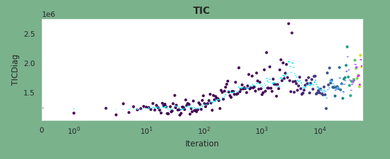

tic_gauge¶
- class cockpit.instruments.tic_gauge(self, fig, gridspec)[source]¶
TIC gauge, showing the TIC versus iteration.
The TIC (either approximated via traces or using a diagonal approximation) describes the relation between the curvature and the gradient noise. Recent work suggested that at a local minimum, this quantitiy can estimate the generalization gap. This instrument shows the TIC versus iteration, overlayed with an exponentially weighted average.
Preview
Requires
The trace instrument requires data from the
TICDiagorTICTracequantity class.- Parameters
self (CockpitPlotter) – The cockpit plotter requesting this instrument.
fig (matplotlib.figure.Figure) – Figure of the Cockpit.
gridspec (matplotlib.gridspec.GridSpec) – GridSpec where the instrument should be placed